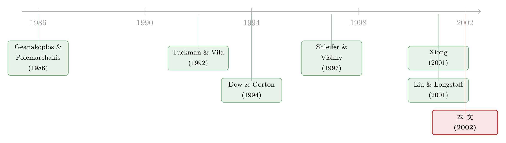

无风险的套利，为什么会反过来害了所有人？
本文读的是 Gromb & Vayanos (2002, Journal of Financial Economics)：在一个套利者必须为每条「腿」单独缴纳保证金的多期模型里，套利活动让所有投资者都受益（因为套利者在供给流动性）；但竞争性套利者却可能选了一个社会次优的风险水平——有时只要让他们减仓，就能让所有人同时变好。这是一篇把「套利的极限」从直觉推到一般均衡福利定理的论文。
1 引言：一桩「稳赚」的买卖，怎么会把人逼到墙角
先讲一个很多人都熟悉的故事。
1998 年之前，华尔街上挤满了做「收敛交易」（convergence trade）的对冲基金。逻辑简单得近乎无趣：两个几乎一模一样的证券，因为种种原因暂时定出了不同的价格，那就买便宜的、卖贵的，等价格收敛，赚走那点价差。教科书告诉我们，这种买卖几乎没有风险——只要你等得起，价格迟早会回到该在的地方。
然后 1998 年来了。价格不但没有收敛，反而进一步发散。对冲基金账面巨亏，被迫平仓，平仓又把价差推得更宽，更宽的价差又逼出更多平仓……长期资本管理公司（LTCM）就是在这台机器里被绞碎的。最耐人寻味的一个细节是：一笔套利头寸的两条「腿」，常常是被分开清算的——做空英国国债的那一头被一个交易商接走，做多德国国债的那一头被另一个交易商接走。原本互相对冲、加在一起几乎无风险的两条腿，一旦被拆开，接盘的人反而要独自承担巨大的方向性风险。
这个细节藏着整篇论文的种子。它说明：套利头寸之所以「无风险」，是因为它被绑在一起；而真实世界里的融资安排，偏偏会在最坏的时刻把它拆开。
这条「套利并非真的无风险」的主线，在本博客里已经被反复讲过。从实证角度可参见《无风险的钱没人捡，是因为捡它的人也会怕》；从博弈角度可参见《把「套利者」从原子变成博弈玩家》；而本文，是把它推到一般均衡福利这一层。
于是一个自然的问题是：如果套利者的钱不够，会发生什么？接着，一个更尖锐的问题是——既然套利者是在替市场提供流动性、做的是好事，那市场让他们自由竞争地去套利，结果是社会最优的吗？
本文的答案出人意料：未必。在某些情形下，强行让套利者少冒一点险，能让市场里的每一个人都过得更好。这就是所谓的「帕累托改进」（Pareto improvement）。一个看上去人畜无害、甚至有益的自由竞争市场，竟然内生出了配置上的无效率。这篇论文，讲的就是这个无效率从哪里来。
2 模型设定：两个一模一样的资产，三种走不到一起的人
我们把舞台搭起来。经济有 \(T+1\) 期，\(t=0,1,\dots,T\)，且 \(T\ge 2\)。资产有三种：一个无风险资产（收益恒为 1），两个有风险资产 \(A\) 和 \(B\)。
两个风险资产是这模型最妙的设计：它们零净供给，而且支付完全相同——都只在第 \(T\) 期支付，支付额等于
$$ \sum_{t=0}^{T} d_t $$
其中 \(d_t\) 是第 \(t\) 期揭晓的随机变量，独立同分布、关于零对称、且支撑有界 \([-\bar d,\bar d]\)。两个资产基本面一模一样，所以它们的价格本该相等——任何价差都是纯粹的套利机会。
接着是三种走不到一起的人。市场是分割的（segmented）：
- A-投资者只能买 \(A\) 和无风险资产；
- B-投资者只能买 \(B\) 和无风险资产；
- 套利者（arbitrageurs）两个都能买。
A、B 投资者都是竞争性的、测度为 1，持有指数效用（CARA）：
$$ U(w_{i,T}) = -\exp(-a\,w_{i,T}). $$
他们之所以会让 \(A\)、\(B\) 价格分叉，是因为受到禀赋冲击（endowment shock）。每期 \(i\)-投资者拿到一笔与资产支付相关的禀赋 \(u_{i,t-1}\,d_t\)。系数 \(u_{i,t-1}\) 衡量这笔禀赋与 \(d_t\) 的协方差有多大——协方差越大，投资者越不愿意再持有同方向的资产。所以 \(u\) 被称作「供给冲击」（supply shock）。关键的对称假设是：
$$ u_{A,t} = -u_{B,t} = u_t. $$
A、B 投资者受到方向相反的冲击。这一点至关重要：当 A-投资者急着抛售 \(A\)（正供给冲击）时，B-投资者恰好急着买入 \(B\)。可他们彼此够不着对方（市场分割）。于是套利者登场，扮演中间商：从 A-投资者手里买 \(A\)、把 \(B\) 卖给 B-投资者，一买一卖之间既赚了价差，又给两边都提供了流动性。
投资者的预算约束（论文式 (1)）是
$$ w_{i,t+1} = w_{i,t} + y_{i,t}\,(p_{i,t+1}-p_{i,t}) + u_{i,t}\,d_{t+1}, $$
\(y_{i,t}\) 是 \(i\)-投资者持有的资产 \(i\) 的份额。
为了刻画「价差」，定义资产 \(i\) 的风险溢价（risk premium）：
$$ f_{i,t} = E_t\!\left(\sum_{s=0}^{T} d_s\right) - p_{i,t} = \sum_{s=0}^{t} d_s - p_{i,t}. $$
第二个等号用到了 \(d\) 关于零对称：未来的 \(d_s\)（\(s>t\)）期望为零，已揭晓的 \(d_s\)（\(s\le t\)）则确定。\(f_{i,t}\) 就是「每股资产的预期超额收益」，本质上度量了资产 \(i\) 偏离基本面有多远。
最后是市场出清：
$$ y_{i,t} + m\,x_{i,t} = 0,\qquad i=A,B, $$
\(m\) 是套利者的测度，\(x_{i,t}\) 是单个套利者在资产 \(i\) 上的持仓。由于 \(A\)、\(B\) 零净供给，套利者必然一边做多、一边做空，自己不承担任何总风险。
到这里都还顺。但真正关键的一步，在于套利者头上那道紧箍咒。
3 核心机制：被「拆开」的保证金账户
套利者除了预算约束，还多背一道融资约束（financial constraint），而它的设定方式，正是整篇论文的发动机。
第一，套利者为每个风险资产单独开一个保证金账户（margin account），账户里装着该资产的持仓和一些无风险资产。账户价值的演化是
$$ V_{i,t+1} = V_{i,t} + x_{i,t}\,(p_{i,t+1}-p_{i,t}). $$
第二，要求每个账户的价值在下一期始终非负：\(V_{i,t+1}\ge 0\)。把演化式代进去，对下一期价格取最坏情形，就得到单个账户必须满足
$$ V_{i,t} \;\ge\; \max_{p_{i,t+1}}\big\{\,x_{i,t}\,(p_{i,t}-p_{i,t+1})\,\big\}. $$
直觉是：账户里的钱，必须足以扛住这个账户在下一期可能蒙受的最大亏损。把两个账户加总（\(w_t=\sum_i V_{i,t}\)），就得到那道核心的融资约束：
整篇论文的「机关」就藏在那个求和号 \(\sum_{i=A,B}\) 里。如果允许跨账户抵押（cross-margining），约束会写成「两个账户合计的损失非负」——而由于 \(A\)、\(B\) 支付相同，多空两腿的损益正好抵消，约束几乎永不绑定，套利者随时能抹平任何价差。可现实是：替你保管 \(B\) 头寸的券商，未必认你手里那张 \(A\) 当抵押品（就像论文里那个「看不懂另一种语言的证书」的比方）。不许跨账户抵押这一条，把本该无风险的对冲头寸，硬生生拆成了两笔各自可能爆仓的风险头寸。
这正是 LTCM 故事里那个「两条腿被分开清算」的细节，被翻译成了一行数学。
于是套利者的优化问题 \(P\) 是：在预算约束和上面这道融资约束下，最大化 \(E_0\,U(w_T)\)。
4 两个反直觉的均衡结论
把这道约束塞进均衡，会长出两个值得反复咀嚼的结论。
结论一：套利者可能抹不平价差，而且会在最坏时刻火上浇油。 当套利者财富不足时，融资约束绑定，他们无法把 \(A\)、\(B\) 的价差压到零。这道「价格楔子」（price wedge）随两类投资者的相对需求上升、随套利者的财富下降。更糟的是动态反馈：当价格发散、套利者账面浮亏时，财富缩水又收紧了约束，逼他们在两个市场各减仓一部分——而减仓本身进一步推宽了楔子。套利者于是从「平抑波动的人」变成了「放大波动的人」。这与 Shleifer & Vishny (1997) 的图景一脉相承。
结论二：明明能满仓套利，他却故意不满仓。 这是更精妙的一点。如果到下一期的套利收益本身是有风险的（因为两类投资者的相对需求 \(u_t\) 会变动），套利者会主动选择低于融资约束的持仓。为什么？因为这是风险管理：当价格楔子变宽时，套利者恰恰发生资本损失，而这正是他最需要资金去抄底的时刻——「钱在我最想用的时候离我而去」。于是他宁可一开始就少冒点险，给坏天气留点弹药。
「明明是稳赚的套利，却故意只做一半」这个机制，并非本文独有。同年 Liu & Longstaff (2001) 在一个外生约束的最优组合问题里得到了几乎相同的结论，本博客也评过（参见《明明是「稳赚」的套利，他却故意只做一半》）。本文的不同在于：这里的约束是内生于市场均衡的。
到此为止，本文还只是把「套利的极限」讲得更细。但论文真正的野心，在下一节。
5 真正的反转：自由竞争的市场，竟然不是帕累托最优的
作者自己说，福利分析才是这篇论文的主要贡献。
先把好消息说清楚：在这个模型里，套利活动对所有人都有益——因为套利者在供给流动性，把价格拉回基本面。这听起来像是「市场万岁」的happy ending。
可是反转出现了：竞争性套利者，可能选了一个社会次优的风险水平。 具体地：
- 当均衡中套利者重仓套利时，减少他们的持仓，能让所有投资者都变好；
- 当均衡中套利者轻仓套利时，增加他们的持仓，能构成帕累托改进。
一个变动套利者持仓的微小干预，竟能让每一个人同时受益。这怎么可能？市场不是已经竞争性出清了吗？
机制有两个齿轮，缺一不可：
(i) 竞争者不内化自己对价格的影响。 每个套利者都是价格接受者，他不知道（也不在乎）「我改变持仓会改变价格」。可所有套利者合起来改变持仓，价格就动了。
(ii) 市场分割 + 融资约束 ⇒ 边际替代率不同 ⇒ 改价格 = 重新分配财富，而这种再分配可以帕累托改进。 这是最深的一层。在一个完全市场里，价格变动只是零和的财富转移，不可能让所有人同时变好。但在这里，由于分割和约束，不同主体的边际替代率（marginal rate of substitution, MRS）不相等：套利者特别看重「早期」和「楔子变宽的状态」里的钱（因为只有他能利用宽楔子、且他对财富的回报更高），而 A、B 投资者更看重后期的流动性。于是一笔由价格变动诱发的财富再分配——早期把钱给套利者，让他在危机时有能力提供更多流动性，后期再回馈给普通投资者——可以让双方都更好。
打个比方说清楚这台机器怎么转：假设套利者建完仓之后，普通投资者的相对需求突然上升。此刻他们最渴望流动性，而套利者也最想供给（楔子很宽、很赚钱）。可套利者偏偏被账面浮亏绊住了手脚。如果此刻他持仓更小、浮亏更少，他就能更激进地接盘，从而抑制楔子的进一步扩大——这又反过来减少他的亏损，让他能更充分地吃下宽楔子。套利者因此更好；而普通投资者「在最需要时拿到了更多流动性」，其收益盖过了「初期流动性略减」的代价，于是也更好。
这个「竞争均衡在不完全市场下可以是受约束次优的」洞见，最早由 Geanakoplos & Polemarchakis (1986) 在一般不完全市场框架里指出。本文的贡献，是把这个抽象定理落地到一个具体的金融摩擦上：当市场不完全性是由市场分割和融资约束造成时，这台机器具体怎么运转、什么时候套利者冒险太多、什么时候太少。
值得一提的是，本文模型里市场不完全的程度是内生的：若套利者财富足够大，他能抹平价差、市场实质上变得完全。从这个角度，套利者更像是「金融创新者」——他们的资本决定了这个经济离「完全市场」有多远。
6 文献脉络：从「套利的极限」到「套利的福利」
把这篇论文放回它生长的土壤里看，会更清楚它站在哪。
最早的两条根，一条来自一般均衡理论：Geanakoplos & Polemarchakis (1986) 证明了不完全市场下竞争配置可以是「受约束次优」的——这是本文福利结论的理论母体。另一条来自套利的微观刻画：Tuckman & Vila (1992) 用「持有成本」让套利者无法抹平错误定价，Dow & Gorton (1994) 用「短视界 + 交易成本」得到类似结论——它们让「套利者抹不平价差」第一次有了模型。
承上启下的关键一篇，是 Shleifer & Vishny (1997) 的《套利的极限》。它第一次强调了融资约束的跨期财富效应：套利能力受制于财富，而财富又取决于过去的业绩；于是套利者会选择不满仓，且其交易会放大噪声冲击。本文与它一脉相承，但把两件事写得更显式：套利者的优势从何而来（市场分割），以及融资约束的机理（保证金账户）。正是这种显式化，使福利分析成为可能。

几乎同时的一批同行：Xiong (2001) 在单资产框架里展示套利者放大噪声冲击（参见《借不到明天的钱，于是他把今天的财富押成了一份美式期权》的相邻思路）；Liu & Longstaff (2001) 在外生约束下得到「故意不满仓」；Kyle & Xiong (2001) 则用财富效应制造金融传染。本文的独特坐标，是把这些零散的「套利受限」结论，统一收进一个能做福利定理的一般均衡里。
一个有趣的脚注：这篇论文还有一段「身后事」。2003 年 JFE 为它发了一则勘误（Corrigendum），改的是引言第一句话里关于「谁最先强调融资约束套利」的措辞——一个看似无关紧要、却牵涉学术优先权的小修正。本博客单独评过这则勘误（参见《一篇 JFE 论文，只有一句话——而它纠正的，是「谁先说的」》）。
7 评论与延伸（Q&A + 研究方向）
(a) 几个可能的疑问
Q：这跟 Shleifer-Vishny (1997) 的「套利极限」到底有什么不同？
两点。第一，本文把套利者的优势来源显式化为市场分割（A、B 投资者够不着对方），而不是笼统地假设套利者「更聪明」；第二，也是更重要的，本文把融资约束写成了保证金账户 + 不许跨账户抵押的具体机理。正是这种显式化，让作者能够计算每个主体的效用、进而做福利分析——这是 SV(1997) 没有做的。
Q：那个「减仓能让所有人都变好」的结论，是不是在偷偷假设有个全知的计划者？
不是。结论说的是存在一个对套利者持仓的微小改变，使所有人的事前期望效用都不下降、至少一人严格上升。它刻画的是竞争均衡本身的次优性，而非要求谁去执行这个改变。当然，「谁来、用什么政策工具实现这个改变」是另一个问题——这也正是它能为 LTCM 救助一类政策辩论提供框架的原因。
Q：为什么非要假设资产「零净供给」和「支付完全相同」？这不是太干净了吗？
这是为了把问题提纯。零净供给保证套利者持有完全对冲的多空头寸、不承担任何总风险——于是他蒙受的所有风险都纯粹来自融资约束，而非基本面暴露。支付相同则保证任何价差都是「纯套利机会」。作者明说这些是为简化；代价是模型离真实的「近似套利」（两个相似但不同的资产）还有一段距离。
Q：有界支撑这个技术假设，是可有可无的吗？
不是装饰。因为要求账户完全抵押、永不违约，就必须保证「最坏情形损失」是有限的——这正需要 \(d_t\) 和供给冲击都有界支撑。换句话说，「永不违约」这个建模选择（它让作者得以不去刻画账户保管人的福利）和「有界支撑」是绑在一起的。
Q：套利者「放大波动」和「故意不满仓」会不会自相矛盾？
不矛盾，它们是同一枚硬币的两面。正因为套利者预见到价格发散时自己会被迫减仓、从而放大波动并蒙受损失，他才在事前选择不满仓做风险管理。前者是约束绑定时的被动反应，后者是约束尚未绑定时的主动防御。
Q：这模型对「该不该救 LTCM」到底给了什么说法？
它给的不是一个「该救/不该救」的答案，而是一个分析框架。论文表明，套利者的清算会通过价格效应给其他套利者和普通投资者制造负外部性（净值下降、流动性枯竭），而这种外部性恰恰来自竞争者不内化价格影响。这为「私人清算的社会成本可能高于私人成本」提供了微观基础——美联储当年对市场失序的担忧，可以部分地翻译成这个模型里的语言。
(b) 几个可能的研究问题与提案
1. 把模型搬到公司债市场的「同一发行人、两只债券」上做实证检验。
【经济故事】本文的核心比较静态是：价格楔子随两类投资者的相对需求上升、随套利者财富下降。公司债市场里，同一发行人不同期限/条款的债券、或 CDS-bond basis，正是现实版的「两个近乎相同的资产」。 【可行性】中。需要 TRACE 成交数据 + 做市商/对冲基金资产负债表代理变量（如一级交易商净头寸、对冲基金 AUM）。识别难点在于「套利者财富」的外生变动——可借助危机期（2008、2020）的资本冲击做事件研究。本博客评过的《互换利差为何敢于「转负」》就是这条路的近邻。
2. 检验「分开清算两条腿」的福利成本。
【经济故事】本文的整个机制，依赖于「不许跨账户抵押」把对冲头寸拆开。那么，允许组合保证金（portfolio margining）的市场，是否真的更少出现价差发散与流动性枯竭？ 【可行性】中。可利用交易所/清算所引入组合保证金的制度变更（不同产品、不同时点的交错采用）做双重差分 (difference-in-differences, DiD)。难点是组合保证金的引入往往内生于市场成熟度，需要找准外生的规则变更窗口。
3. 把「外资持有人」作为本文的第三类分割投资者。
【经济故事】跨境市场里，本国与外国投资者面对不同的禀赋冲击与持有约束，套利者（全球银行/对冲基金）在中间撮合。本文的福利结论预测：外资套利资本的撤离，会通过价格效应损害本地所有投资者——这正是新兴市场「资本外逃」叙事的一个可检验版本。 【可行性】中偏高。需要个股层面的外资可投资度 + 全球套利资本流向数据。识别可借助指数纳入/可投资度调整作为外生冲击（本博客评过若干这类自然实验）。
4. 内生化套利者的进入。
【经济故事】本文固定套利者测度 \(m\)，明说这是为了刻画短期市场行为（危机中新资本不会及时涌入）。但中长期，进入会改变福利结论：自由进入是否会把「冒险太少」的均衡推向最优，还是引入新的过度进入扭曲？ 【可行性】低偏中。纯理论拓展 doable，但要把进入的固定成本、信息租金写进一般均衡并保持可解，技术上不轻松；继续走连续时间极限或许是出路。
5. 度量「楔子」对套利者财富的弹性。
【经济故事】本文给出定性比较静态（楔子随套利者财富下降），但弹性的量级是政策相关的：救助一美元套利资本，能压窄多少基点的价差？ 【可行性】中。可用 covered interest parity 偏离、CDS-bond basis 等「无套利缺口」作因变量，用中介资本比率（He-Kelly-Manela 一类因子）作自变量做面板回归。难点仍是中介资本的内生性与度量误差。
8 参考文献
Dow, J., Gorton, G. (1994). Arbitrage chains. Journal of Finance 49(3), 819–849.
Geanakoplos, J., Polemarchakis, H. (1986). Existence, regularity, and constrained suboptimality of competitive allocations when the asset market is incomplete. In Heller, W., Starr, R., Starrett, D. (Eds.), Uncertainty, Information and Communication, Essays in Honor of Kenneth J. Arrow, Vol. 3. Cambridge University Press.
Gromb, D., Vayanos, D. (2002). Equilibrium and welfare in markets with financially constrained arbitrageurs. Journal of Financial Economics 66(2–3), 361–407.
Kyle, A., Xiong, W. (2001). Contagion as a wealth effect of financial intermediaries. Journal of Finance 56(4), 1401–1440.
Liu, J., Longstaff, F. (2001). Losing money on arbitrages: optimal dynamic portfolio choice in markets with arbitrage opportunities. Unpublished working paper, UCLA.
Shleifer, A., Vishny, R. (1997). The limits of arbitrage. Journal of Finance 52(1), 35–55.
Tuckman, B., Vila, J.-L. (1992). Arbitrage with holding costs: a utility-based approach. Journal of Finance 47(4), 1283–1302.
Xiong, W. (2001). Convergence trading with wealth effects. Journal of Financial Economics 62(2), 247–292.
我的判断：这篇论文的真正分量，不在于又一次证明「套利有极限」，而在于它把一个抽象的一般均衡定理（Geanakoplos-Polemarchakis 的受约束次优）焊接到一个具体得能闻到 1998 年硝烟味的金融摩擦上，并由此第一次系统地回答「金融约束市场的福利该怎么算」。它的代价同样诚实地写在脸上：零净供给、支付完全相同、冲击在第 1 期一次性出清、套利者测度固定——每一条都为可解性服务，也都让结论离真实市场远了一步。对识别（在理论意义上）我最担心的，是那个「不许跨账户抵押」假设承载了全部的重量：一旦现实中组合保证金普及，整台机器是否还转？后续我最想看到的，是有人把这套福利会计真正拿到数据上去算一笔账——救助一美元套利资本，到底买回了多少基点的市场效率。